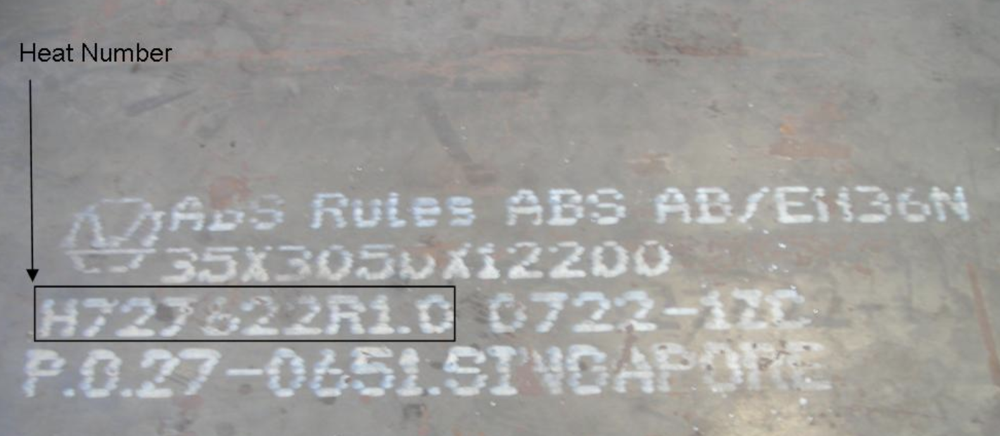
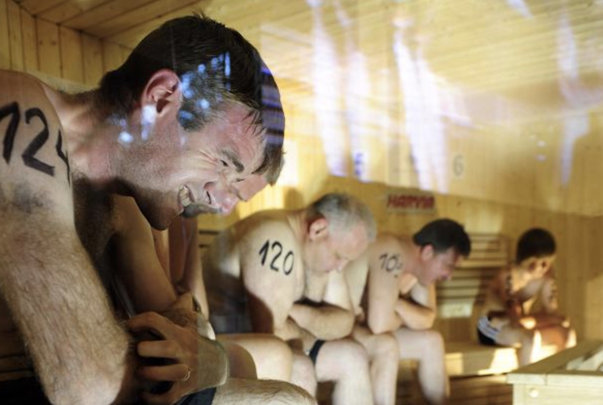

chapter21.1--handout
Background Information
Steel mill
💧一般我们说的mill指的是磨坊，但是这里是大亨Charles Schwab，作为一个资本市场的玩家，他所拥有的是另外一种mill，也就是steel mill（也叫做steelworks），其作业的主要方式就是将铁熔化再锻造成型，有些steel mill也专门加工半成品（semi-finished casting products），制成品上面往往会有一个编码，叫做heat number，也就知道Schwab问How many heats的意思啦～

Thomas Collier Platt(July 15, 1833 – March 6, 1910)
💧他是两届众议院议员（the U.S. House of Representatives），被认为是纽约州共和党的“政界大佬”（he "political boss" of the Republican Party in New York State），纽约时报对他评价（the New York Times）：
"no man ever exercised less influence in the Senate or the House of Representatives than he," but "no man ever exercised more power as a political leader."
他也自认为是 "political godfather" ，对很多美国政界人物有过影响。
Battle of San Juan Hill
💧Battle of San Juan Hill (July 1, 1898)也称为the battle for the San Juan Heights，是美西战争中的一场战役（the Spanish–American War），San Juan heights位于古巴（Cuba）.
这场战役也是美西战争中最为血腥的战役，同样也被认为是Rough Riders的伟大胜利。在这场战役中作为新人指挥官的Theodore Roosevelt，因为他在古巴的卓越表现，被授予the Medal of Honor.
Al Smith(December 30, 1873 – October 4, 1944)
💧美国政治家，曾经是共和党的总统候选人（the Democratic U.S. presidential candidate in 1928），Smith可能八字和Roosevelt不和，在Franklin D. Roosevelt竞争当中，由于大部分选民对罗斯福新政（Roosevelt's New Deal）怀有极大的希望，最终Al Smith还是败下阵来。
Lewis E. Lawes
Lewis Edward Lawes (September 13, 1883 – April 23, 1947)监狱狱管，同时也是监狱改革的倡导者，在他21年的终身任职生涯（tenure）中，Lewis一共在Sing Sing Correctional Facility处理了303起犯人的处决（executions of 303 prisoners.）
Harvey S. Firestone
💧美国商人，the Firestone Tire and Rubber Company创始人, 也是全球最先开始做轮胎跨境贸易的商人之一。
💧值得一提的是Firestone, Henry Ford, and Thomas Edison这三位被认为是当时美国工业三大巨头，三位基友...也是经常工作、度假都一起玩耍，他们三人搞了一个高级的社交俱乐部："The Millionaires' Club."（百万富翁俱乐部）
Frederic Herzberg(April 18, 1923 – January 19, 2000)
美国心理学家，匹兹堡大学博士，在经济管理方面影响深远，他最著名的是Motivator-Hygiene theory激励保健理论，也叫做双因素理论Two-factor theory，他的作品"One More Time, How Do You Motivate Employees?"是被Harvard Business Review哈佛商业评论推荐最多的文章。
Vocabulary
quota
💧n.a prescribed number
定量, 定额, 配额
💧All the salesmen met their quota for the month.
所有的销售人员都达到了这个月的任务配额。
He overfulfilled the quota by forty per cent.
他超额40%完成指标。
coax
💧vt. influence or urge by gentle urging, caressing, or flattering
哄, 用好话劝说, 巧言骗取
💧She coaxed him to take the medicine.
她哄他吃药。
For weeks, her German and European allies have been coaxing her to declare her candidacy.
数周以来，她的德国盟友和欧洲盟友一直在劝说她宣布参选。
sordid
💧morally degraded
adj. 肮脏的；卑鄙的；利欲熏心的；色彩暗淡的
💧I want no part of this sordid business.
我不想卷入这一卑鄙勾当。
the story paints a sordid picture of bribes and scams.
这个故事刻画了一幅贿赂和阴谋的肮脏画面。
notorious
💧adj. disreputable
臭名昭著的, 声名狼藉的
💧He was notorious as a gambler.
他是臭名昭著的赌徒。
Los Angeles is notorious for its smog.
洛杉矶的雾霾是出了名的。
vagary
💧n. an unexpected and inexplicable change in something
奇想；奇特行为
💧The style of vagary and ghastfulness and the sense of mystery are full of thestory of Edgar Allan Poe.
艾德加·爱伦·坡的小说风格奇特恐怖,充满了神秘感。
Crush Your Problems
- "The way to get things done," say Schwab, "is to stimulate competition. I do not mean in a sordid,money-getting way, but in the desire to excel."
💧The way to get things done is to stimulate competition.
搞定事情的方式是鼓励竞争。
the way to... is to...很好用的方式，有时候特别简单的小词用好了的话也会有意想不到的效果。
e.g.The way to finish your task on time is to plan everything in advance.
The way to solve the environmental problem is to take action from ourselves immediately.
💧同理，这个句子中的另一个小词（一般是介词、不定式等），I do not mean in..., but in...
同样可以改成the way的方式，用在写作中哦：
e.g.The way to accompolish a goal is not in the repeating hard work of one single person, but in the cooperation of a team.
- A challenge not only changed his life; it had a real effect upon the future of his nation.
💧not only，你在用到的时候是不是一定要加一个but also？
其实你不用这样，not only后面可以有多种方式，另一个可以用的是not only...，but ... as well.
也可以像这个句子一样，用semicolon（分号）来链接，表示两个分句的并列关系（分号=逗号+and）.
e.g.Team work benifits not only the employers, but the working staff as well, for they could be much more efficient this way.
Patriotism represents not only the love of one's country; it serves as an identity of his/her own nationality.
- His "humanizing" of criminals wrought miracles in the way of prison reform.
他对于罪犯的人性化管理创造了监狱改革的奇迹
💧Wrought其实是work的过去式，并不是古英语哈，如果有表示精细化的创造、改变之类的意思，我们想表达类似意思的时候，可以用wrought miracles哦～
Content Analysis
今天的内容中，卡叔再次提到了Charles Schwab的例子，Schwab的一个工厂的工人们不好好干活，不管是领导如何督促都不能提高产出效率。
Schwab做了一件事情，和manager要了一支粉笔，向工厂的工人问：”你们这一班产出了多少量？“ 然后在地上大大的写了一个6，之后换班的工人都很好奇，询问之后发现是big boss干的（感觉确实很6），之后两个shift的工人之间居然形成了竞争，很快，这个工厂从没什么产量的状态，变成了行业翘楚。
（Shortly this mill, which had been lagging way behind in production, was turning out more work than any other mill in the plant.）PS：这里plant指的是industry哈。
正如Schwab所说：搞定一件事情的正确打开方式，是鼓励竞争，不是那种基于金钱的竞争，而是激励人，激发起他们想要变得优秀的渴望。
"The way to get things done," say Schwab, "is to stimulate competition. I do not mean in a sordid, money-getting way, but in the desire to excel."
之后卡叔又举到了Theodore Roosevelt选举时候的例子，Theodore被竞争对手发现自己不是美国合法公民的身份感到害怕想退出，这时Thomas Collier Platt激励他，别忘记自己是古巴回来的战场英雄，Thomas激将他说到：“难道San Juan Hill的英雄是一个懦夫吗？” （Turning suddenly on Theodore Roosevelt, he cried in a ringing voice: "Is the hero of San Juan Hill a coward?"）
最后Roosevelt在这个激励之下接受了challenge，名垂青史，改变了自己的命运，同时也改变了美国的国家命运。
古希腊的King's guard的motto（座右铭）也论证了这个道理：每一个人都有恐惧，但是勇敢的人会放下恐惧，努力前行，有时可能会面临死亡的威胁，但是往往都会取得成功。
（"All men have fears, but the brave put down their fears and go forward, sometimes to death, but always to victory"）
当Al Smith在纽约做governor的时候，遇到了一个棘手的问题，臭名昭著的Sing Sing监狱需要有个话事人...一个iron man，钢铁（侠）般强大的人来管理这个监狱，搞定流传的scandal，他找到了Lewis E. Lawes of New Hampton，但是这位小哥哥也听到过各种流言，有点怂，Al Smith直接放大招（throw down a challenge）说：你害怕我不怪你，这件事情还是需要个大人物来搞定的。
（"I don't blame you for being scared. It's a tough spot. It'll take a big person to go up there and stay."）
结果可想而知，Lewis 接受了这个职位，因为something big的诱惑。最终他也成为了改革的奇迹。
（His "humanizing" of criminals wrought miracles in the way of prison reform.）
Frederic Herzberg的研究也证明，是work本身能给人最强的激励，如果工作本身就很刺激有趣，工作者就会有更强的动机。 （If the work was exciting and interesting, the worker looked forward to doing it and was motivated to do a good job.）
所以，每一个成功人士想要的都是一样的东西：
The desire to excel. The desire for a feeling of importance.
这就是今天卡叔的Principle 12啦～ Throw down a challenge.想让别人努力，就得来点挑战～
Today's Bonus
今天的内容最后，卡叔That is what makes foot-races and hog-calling and pie-eating contests. 这几种游戏都是激发人的斗志，拼命想要赢的活动，今天的彩蛋给大家奉上一组有趣（perhaps weird）的游戏，闲时可以搞来玩玩看呀：
💧Pie-eating contest
吃派大赛
看过TBBT的同学还记得这个场景吗？就是卡叔说到的Pie-eating contest，参与的玩家要背着手跪在地上把脸埋在派里面吃，最先吃完的胜利。
pie-eating contest不仅活在剧里，同样有一个神奇的 The annual World Pie Eating Championship（年度世界吃派锦标赛），通常是在英格兰举行，1992年首次举办。2006年又开发出了“vegetarian version“素食主义者版本。
💧The Wife-Carrying World Championships
扛媳妇世锦赛
是的，在神奇的斯堪的纳维亚半岛，有一个神奇的国家叫芬兰，这里有一群人在搞这样的比赛，男性选手（male competitors）扛着一位女性队友（female teammate）跑步的比赛，跑得最快的是赢家。
几种比赛姿势都是需要练习的：背着（piggyback）, 扛肩膀上fireman's carry (over the shoulder), 或者...倒挂着—Estonian-style (the wife hangs upside-down with her legs around the husband's shoulders, holding onto his waist)...
💧World Sauna Championships
桑拿...世锦赛

The World Sauna Championships也是伟大的Finland搞出来的，从1999年开始的年度锦标赛，组织者要求参赛选手在桑拿间里面静坐比赛，看谁可以坚持的更久，Sauna Championships第一次举办就吸引了超过20个国家的参赛选手。但是在2010年的championship中的决赛当中，很不幸有一位选手牺牲掉了...他的对手也几乎是一趟濒死体验，所以主办方停止了这项赛事。
💧Chess Boxing
国际象棋拳击
国际象棋拳击（Chess Boxing）是一项综合国际象棋和拳击的新兴运动。该项运动是由荷兰艺人伊皮·华比殊（Iepe Rubingh）在2003年公开，其灵感是源于一位法国漫画家伊其·布赖（Enki Bilal）的作品。现时，国际象棋拳击日渐流行起来，世界国际象棋拳击联合会就估计全球有150位国际象棋拳手。参赛的运动员必须要善于拳击和棋艺方能取胜。
💧Pillow Fight League
枕头大战联盟
The Pillow Fight League (PFL)是base在多伦多的一项半职业联赛（semi-professional sports league），主要干的事儿就是...枕头大战...比赛场地和拳击类似，选手在其中互相用枕头暴打...这项赛事在多伦多（Toronto）、蒙特利尔（Montreal）,甚至魁北克全省（Quebec） 以及大苹果New York City都有的玩，不过主战场还是在多伦多。
💧The World Black Pudding Throwing Championships
世界黑布丁投掷锦标赛
来自神奇的英国Lancashire，据说历史悠久，可以追溯到到玫瑰战争的时候（the War of the Roses）...就是《权力的游戏》创作来源的那个...玫瑰战争...据说代表the House of Lancaster 和the House of York的两方势力，在1455年的一场战斗中，打完了所有的弹药，想来想去不能不打...所以就开始互相丢食物（at a battle in Stubbins, Lancashire in 1455, they are said to have run out of ammunition and resorted to throwing food at each other）兰卡斯特家的扔black pudding from Lancashire，约克家的扔Yorkshire puddings from Yorkshire.
这项赛事的发明据说是为了纪念这场战役，现在每年有很多人去现场参观。有兴趣的可以翻个视频来看看，去现场围观的话，一定要注意不要被黑布丁砸到。
smart word
今天感触最深的是古希腊king's guard的motto：
"All men have fears, but the brave put down their fears and go forward, sometimes to death, but always to victory"